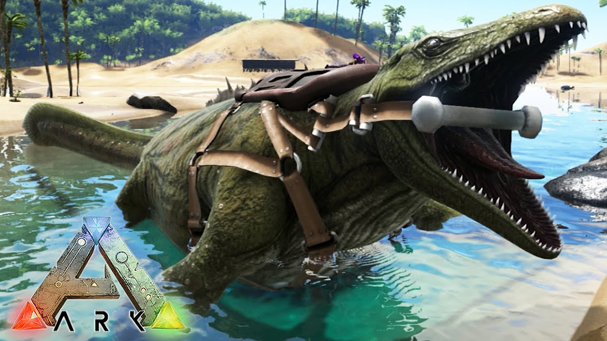
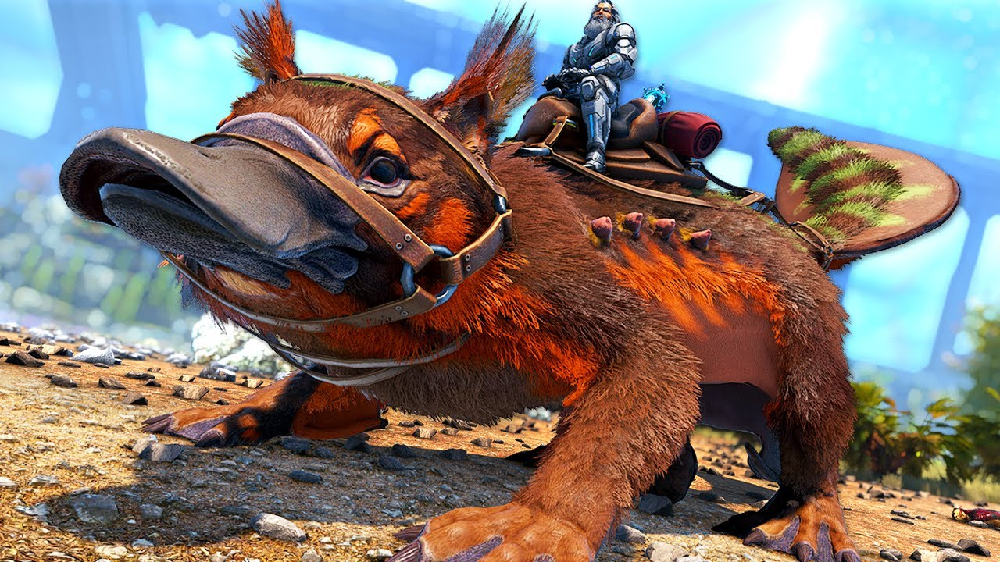

Domesticando en ARK

ARK: Survival Evolved es un emocionante juego de supervivencia y aventuras que te transportará a un mundo prehistórico lleno de misterios y peligros. Despiertas en una isla remota y misteriosa, sin ningún recuerdo de cómo llegaste allí ni de quién eres. Tu objetivo es sobrevivir en este entorno hostil, enfrentando amenazas tanto de la naturaleza como de criaturas prehistóricas gigantescas y a menudo peligrosas. Para sobrevivir en ARK, deberás aprender a aprovechar los recursos que la isla te ofrece, desde recolectar madera y piedra para construir refugios hasta cazar y domesticar criaturas para que te ayuden en tu lucha por la supervivencia. Cada día representa un nuevo desafío, ya que deberás enfrentar cambios climáticos extremos, enfrentamientos con otras tribus de jugadores y la constante búsqueda de comida y agua. La domesticación de criaturas es una parte fundamental de ARK. Podrás cazar y atrapar diversas criaturas prehistóricas, desde dóciles dinosaurios herbívoros hasta feroces depredadores carnívoros. Con paciencia y habilidad, podrás hacer que estas criaturas te obedezcan y te ayuden en diversas tareas, como el transporte, la recolección de recursos y la defensa contra enemigos. Además de la supervivencia y la domesticación, ARK también ofrece una emocionante experiencia multijugador. Puedes formar tribus con otros jugadores para enfrentar juntos los desafíos de la isla, construir bases impresionantes y participar en emocionantes batallas entre tribus. Prepárate para explorar un vasto mundo lleno de maravillas prehistóricas, desafíos emocionantes y la oportunidad de crear tu propia historia de supervivencia en ARK: Survival Evolved. ¿Tienes lo necesario para enfrentar esta aventura épica? ¡Descúbrelo ahora y comienza tu viaje en esta isla llena de misterio y peligro!
Domesticar a una criatura en ARK: Survival Evolved es una tarea emocionante pero exigente. Requiere paciencia, recursos y estrategia para lograr la conexión con estas bestias prehistóricas y hacerlas parte de tu equipo de supervivencia. Desde los majestuosos dinosaurios hasta las feroces criaturas marinas, cada especie tiene su propio método de domesticación y requisitos específicos. Explorar la isla en busca de especímenes adecuados, reunir los suministros necesarios para mantenerlos sedados durante el proceso y cuidarlos mientras se someten al proceso de domesticación, son solo algunas de las tareas que enfrentarás. Durante el proceso, los sobresaltos son inevitables, como las emboscadas de otras criaturas hostiles que buscan arruinar tus esfuerzos. Sin embargo, la recompensa de convertir a estas criaturas en fieles compañeros de batalla y recursos invaluables hace que cada paso valga la pena. Los lazos que formarás con tus criaturas domesticadas son duraderos, y juntos enfrentarán los peligros que acechan en esta misteriosa isla. Recuerda que cada criatura tiene sus propias habilidades y roles, lo que te permite abordar desafíos diversos y aprovechar al máximo la diversidad que ARK tiene para ofrecer. Ya sea volando por los cielos a lomos de un majestuoso Pteranodon, explorando las profundidades submarinas con un leal Megalodon o defendiendo tu base junto a un poderoso T-Rex, la domesticación en ARK te brinda una experiencia única y emocionante que nunca olvidarás. Así que, prepárate para enfrentar el desafío de domesticar a las criaturas más impresionantes que el mundo prehistórico tiene para ofrecer. Tu destreza y dedicación serán puestas a prueba, pero al final, serás recompensado con un equipo de compañeros leales y valientes en esta increíble aventura de supervivencia en ARK. ¡Buena suerte, sobreviviente! La domesticación en ARK no se trata solo de adiestrar criaturas, sino de forjar vínculos profundos con seres que una vez fueron salvajes. A medida que dedicas tiempo y esfuerzo para ganarte su confianza, verás cómo estas majestuosas bestias comienzan a responder a tu llamado y a seguir tus órdenes. Cada encuentro con una nueva especie es una oportunidad para aprender más sobre su comportamiento y hábitos, lo que te ayudará a adaptarte y ser más efectivo en tu enfoque de domesticación. A través de esta interacción íntima con la fauna de ARK, te sentirás verdaderamente conectado con el mundo prehistórico que te rodea, y estas criaturas se convertirán en parte esencial de tu experiencia de supervivencia. La diversidad de criaturas en ARK es asombrosa, y cada una tiene sus propias particularidades y ventajas. Algunas serán valiosas compañeras de transporte, mientras que otras se destacarán en el combate o serán expertas recolectoras de recursos. Al elegir qué criaturas domesticar y cómo utilizarlas en tu día a día, deberás tomar decisiones estratégicas para optimizar tu supervivencia en este mundo hostil. No subestimes el poder de una manada de dinosaurios que trabajan en armonía, o la ventaja de tener un fiel compañero volador para explorar los rincones más remotos de la isla. En ARK, la sinergia entre tú y tus criaturas es fundamental para enfrentar los desafíos que se presentan, y juntos se convertirán en una fuerza imparable capaz de conquistar todo lo que este misterioso mundo tiene para ofrecer.